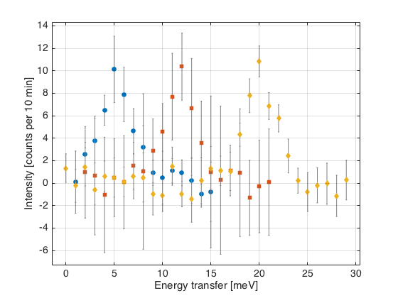
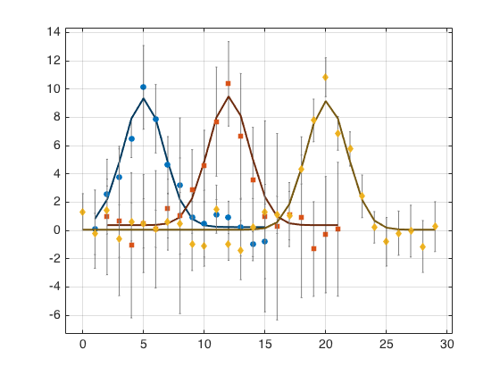

Contents
close all
clear all
clc
Let's make some fake data
x1=1:1:15;
sep{1}=repmat(NaN,length(x1),1);
s1.x=x1;
s1.y=ngauss_FWHM(x1,[40,5 4 0 0 0])+3*(rand(size(x1))-1/2);
s1.e=1+2*rand(size(x1));
s1.x_label='Energy transfer [meV]';
s1.y_label='Intensity [counts per 10 min]';
s(1) = spec1d(s1);
x2=2:1:21;
sep{2}=repmat(NaN,length(x2),1);
s2.x=x2;
s2.y=ngauss_FWHM(x2,[40,12 4 0 0 0])+3*(rand(size(x2))-1/2);
s2.e=2+5*rand(size(x2));
s2.x_label='Energy transfer [meV]';
s2.y_label='Intensity [counts per 10 min]';
s(2)=spec1d(s2);
x3=0:1:29;
sep{3}=repmat(NaN,length(x3),1);
s3.x=x3;
s3.y=ngauss_FWHM(x3,[40,20 4 0 0 0])+3*(rand(size(x3))-1/2);
s3.e=1+1.2*rand(size(x3));
s3.x_label='Energy transfer [meV]';
s3.y_label='Intensity [counts per 10 min]';
s(3)=spec1d(s3);
figure
plot(s)

Here I define all my starting parameters (all pretty bad guesses)
p{1}=20;
p{2}=[2 10 25];
p{3}=3;
p{4}=[1 2 3];
p{5}=0;
p{6}=0;
notfixed=[1 2 1 2 0 0];
Fit it normaly
[f1, w2] = fits(s,'ngauss_FWHM',p,notfixed);
Warning: COVERGENCE NOT ACHIEVED!
9.125% chance of fewer than 13 runs. Try changing fcp...
Lets add some boundary conditions....
bounds{1} = [0 60];
bounds{2} = [0 5; 5 20; 10 30];
bounds{3} = [0 5];
bounds{4} = [zeros(3,1) 10*ones(3,1)];
bounds{5} = [-5 5];
bounds{6} = [-5 5];
[f, w] = fits(s,'ngauss_FWHM',p,notfixed,'bounds',bounds,'fcp',[1e-4 80 1e-4]);
[f_no_fcp, w_no_fcp] = fits(s,'ngauss_FWHM',p,notfixed,'bounds',bounds);
figure
plot(f)
Warning: COVERGENCE NOT ACHIEVED!
47.526% chance of fewer than 32 runs. Try changing fcp...

This is what happens with normal fitting.
[f_test, w_test] = fits(s,'ngauss_FWHM',[p{1} p{2}(1) p{3} p{4}(1) p{5} p{6}],logical(notfixed));
figure
plot(f_test)